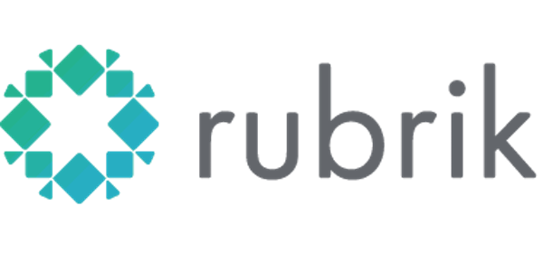
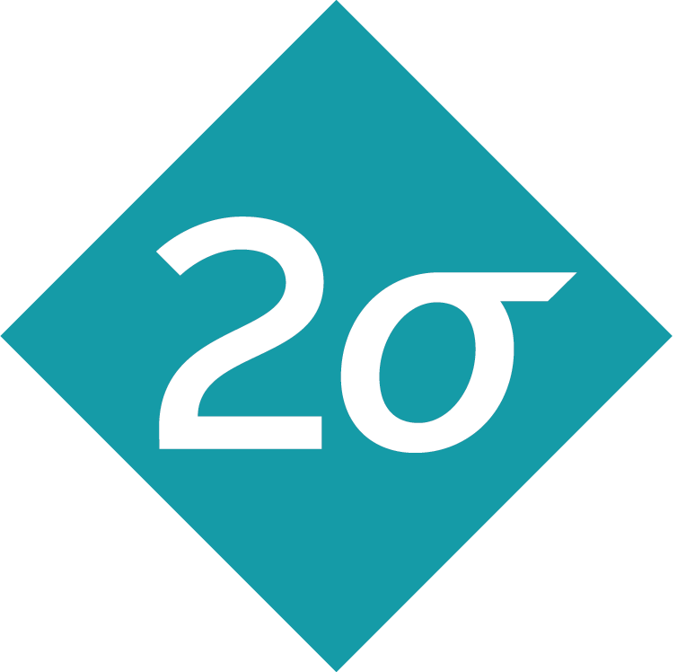
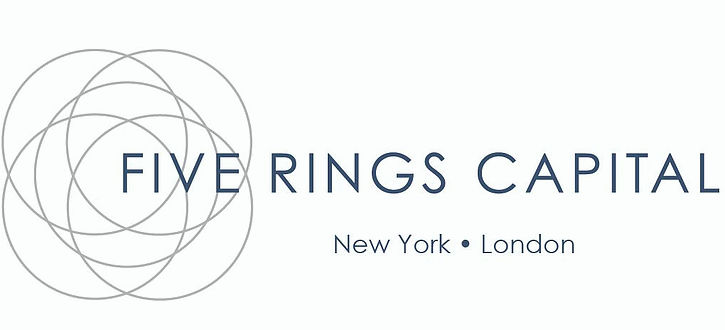

I seek to discover, lead, and build products to define a new tomorrow.
I have a wide range of experiences, most recently architecting large-scale microservices, productionizing new methods for data evaluation, and much more to bring robots to life at Nuro. In the past, I've also dabbled as a trader, researcher, and teacher.
I graduated from the Massachusetts Institute of Technology, winter of '18, majoring in Computer Science, minoring in Mathematics, and concentrating in Music. If you're familiar with MIT course numbers, this corresponds to a major in 6-3, minor in 18, and concentration in 21M.
There's a little bit more than pure professionalism here though. In my spare time, I play quite a bit of No Limit Texas Hold'em. I have a personal goal to mark 25 countries on my passport before it expires, recently doing a month-long excursion in Asia in winter '18. I also play a couple of video games, including Teamfight Tactics and League of Legends.
Feel free to reach out for just about anything!
I have extensive industry experience in both software and finance. Listed below is a quick snapshot of my professional career.
Software Engineer | Feb 2019 - Jun 2020
Software Engineer Intern | Aug 2018 - Oct 2018
|  |
|---|
Software Engineer Intern | May 2017 - Aug 2017, May 2018 - Aug 2018
|  |
|---|
Trader Intern | Jan 2017 - Feb 2017
|  |
|---|
Software Engineer Intern | Jun 2016 - Aug 2016